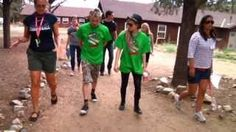
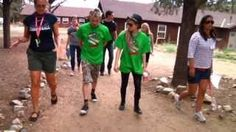

Galeria


"The Avril Lavigne Foundation" fue creada con el objetivo de ayudar a niños y adolescentes con enfermedades graves y/o discapacidades.
La fundación fue diseñada y desarrollada seis meses atrás de su anunciamiento en Twitter.
En promoción a la creación del proyecto, fue creado un sitio web donde se publicarían mensajes y vídeos hechos por la misma Avril con causas de apoyo para niños y jóvenes con discapacidades y enfermedades graves.
Que en inglés su acrónimo es «R.O.C.K.S»
Respect
Opportunity
Choices
Knowledge
Strength
The Avril Lavigne Foundation con el lema R.O.C.K.S. “Respect Opportunity Choices Knowledge Strength” que colabora con las principales organizaciones de caridad para diseñar y ejecutar programas, crear conciencia y movilizar el apoyo a niños y adolescentes con discapacidades. Durante los últimos años, Avril siempre se ha comprometido con proyectos benéficos y ha intentado que sus fans también se animen a colaborar.
Su misión que está representada por el respeto, la oportunidad, las opciones, el conocimiento y la fuerza (que en inglés su acrónimo es «R.O.C.K.S»)
Es respetar las necesidades de todos los niños y jóvenes, sin importar cuáles sean las circunstancias, y animar a otros a hacer lo mismo, crear la oportunidad a los niños y jóvenes con enfermedades graves o discapacidades a seguir sus sueños
Ofrecer opciones para que los niños y los jóvenes ven que tienen muchas opciones en la vida y no sólo un camino único definido por sus circunstancias
Proporcionar conocimientos sobre lo que es posible para ellos y sus familias a través de ideas de programas nuevos que la fundación apoyara y ayudará a expandir y dar a los niños y a sus familias la fuerza para enfrentarse a sus retos diarios.
En beneficio de la fundación la cantante ha lanzado tres productos a través de internet.
El primero de ellos es una serié de calcomanías.
El segundo una camiseta que tiene el lema de la fundación.
El tercero un paquete que incluye el álbum Goodbye Lullaby, una camiseta con el logo de «Girlfriend», una halder y la loción corporal Black Star.
Subastas
Avril Lavigne anunció que subastaría dos boletos de su gira The Best Damn Tour de los conciertos realizados en Londres y París al que nombraron «Meet & Greet» donde ofrecieron entre 560 000 y 810 000 dólares.
Otras cantantes, cantantes y bandas tales como Lady Gaga, Katy Perry, Travis Barker y Train también subastaron entradas para sus giras como ayuda a la fundación
*El sur de California y Florida
*Gran Houston
*Montana
*Illinois
*Hawái
*Nevada
*Washington
*Ohio
*Alberta(este último perteneciente a Canadá)
